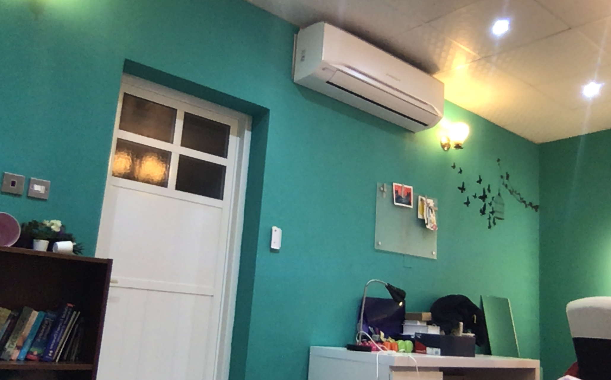
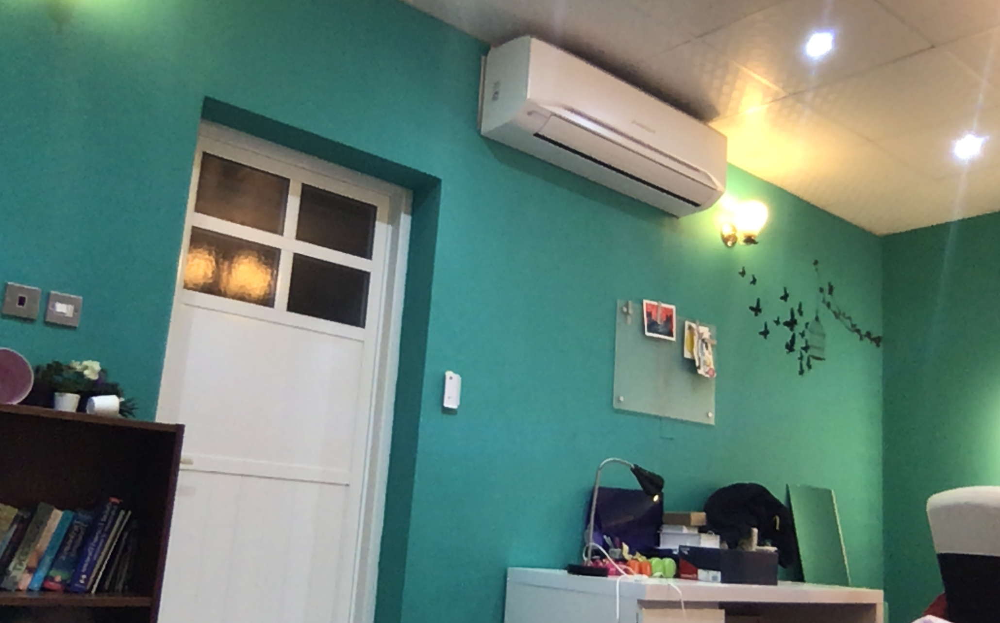

MuW201 Tangible Computing

Fatima_Alhalyan
check it out for yourself! link text
 

function setup() { let canvas = createCanvas(800, 800) // canvas.parent('p5container') capture = createCapture(); capture.hide() } function draw(){ background(capture.get()) for (var x = 0; x < width; x+=200){ for (var y = 0; y < width; y+=200){ drawFlower(x,y,(x*y)/2) } } } function drawFlower(posX,posY,r){ let numPetals = 24 let angle = TWO_PI/numPetals let innerRadius = 31 push() translate(posX, posY) rotate(frameCount/25) let scl = sin(millis()/20000+(posX+posY+r)/4)*1 scale(scl) circle(r,r,innerRadius) for (var r = 0; r < TWO_PI; r+=angle){ push() fill('pink') rotate(r) ellipse(0,innerRadius,25,100) pop() }